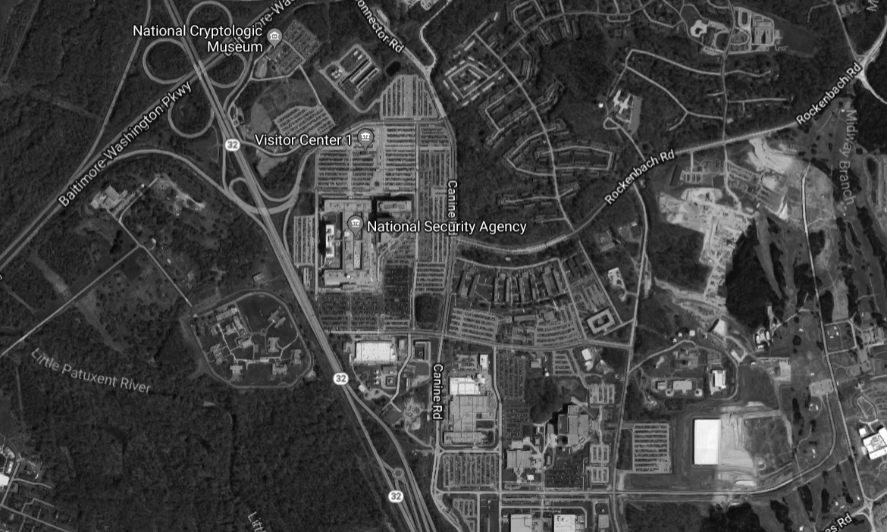
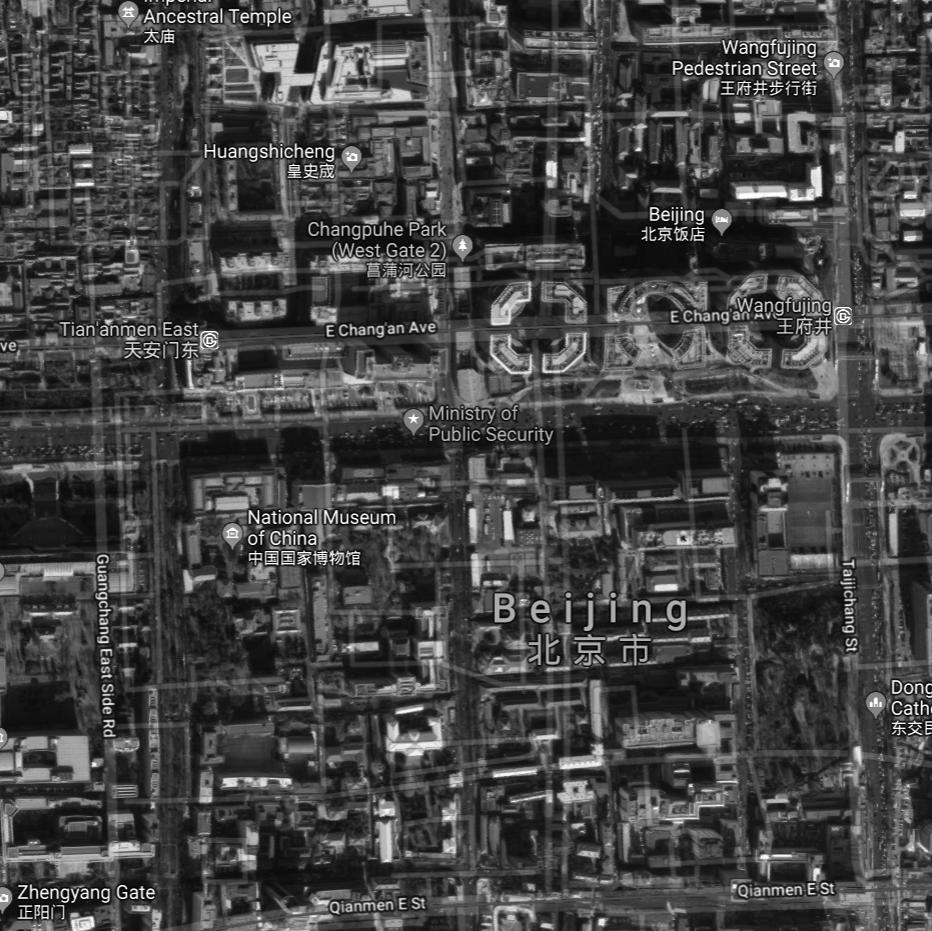
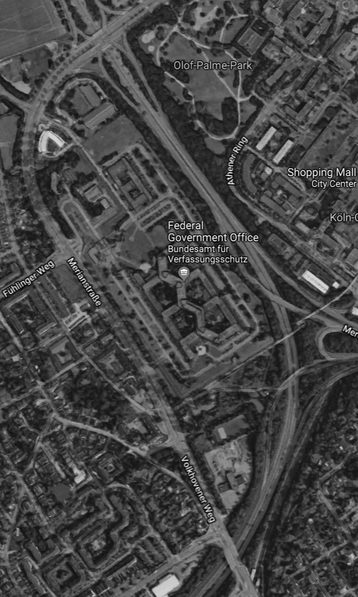
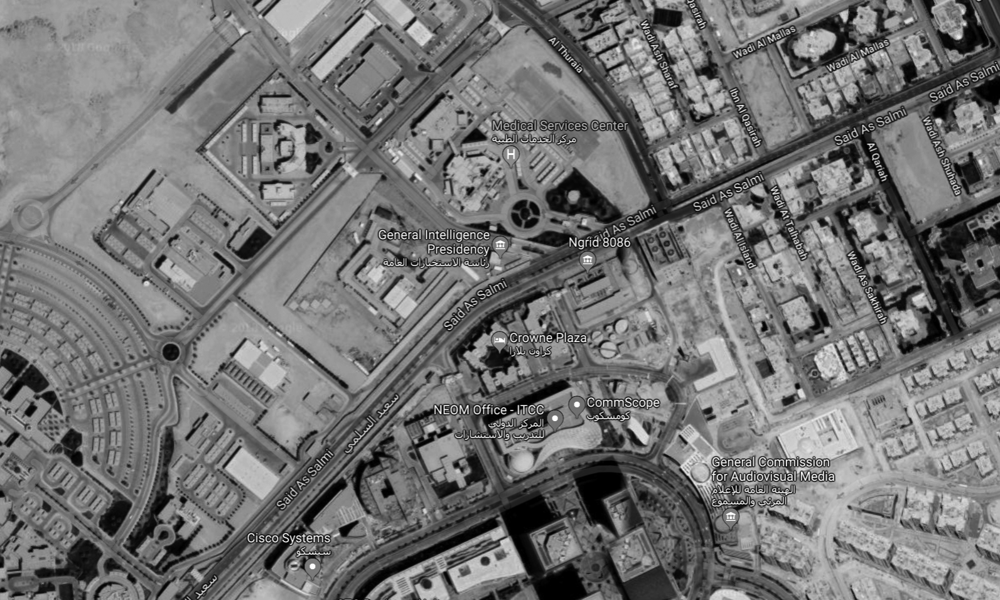
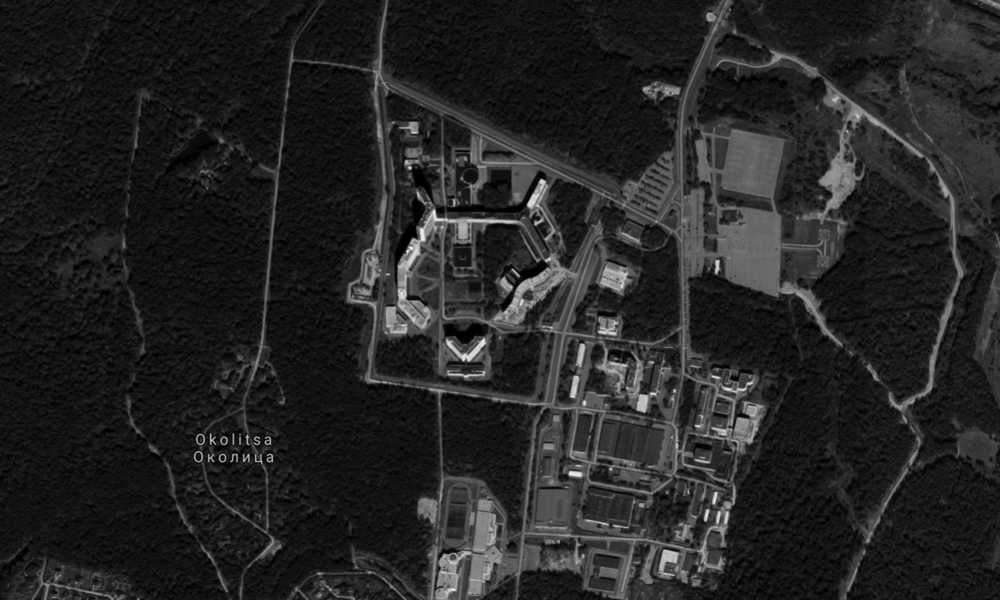
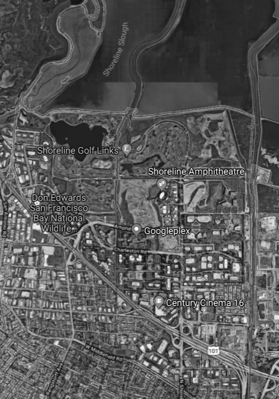
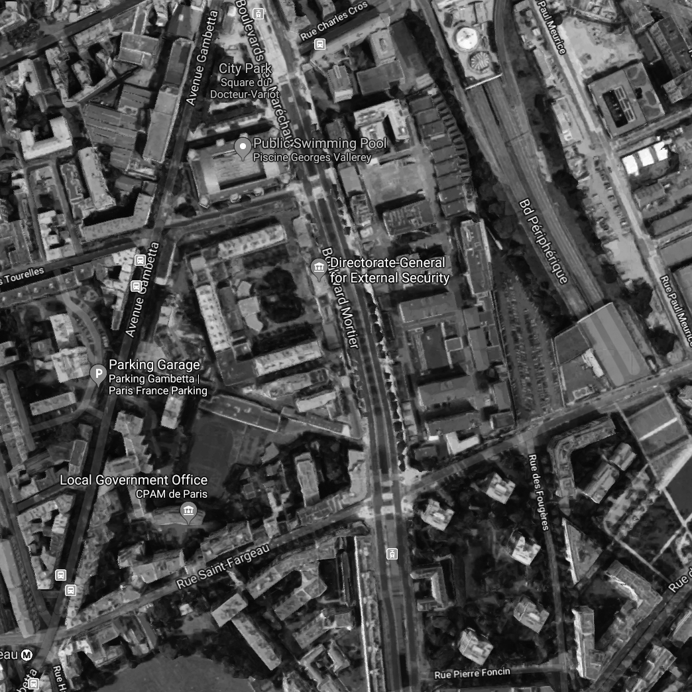
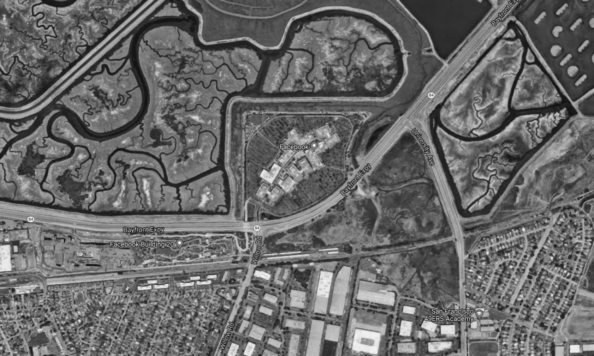

39°06'31.6"N 76°46'13.2"W
39°54'23.9"N 116°24'17.6"E
51°53'58.8"N 2°07'27.2"W
24°44'44.0"N 46°38'07.9"E
51°01'12.0"N 6°53'31.5"E
55°35'02.6"N 37°31'09.2"E
37°25'19.7"N 122°05'00.5"W
48°52'28.9"N 2°24'31.1"E
37°29'07.1"N 122°08'50.6"W